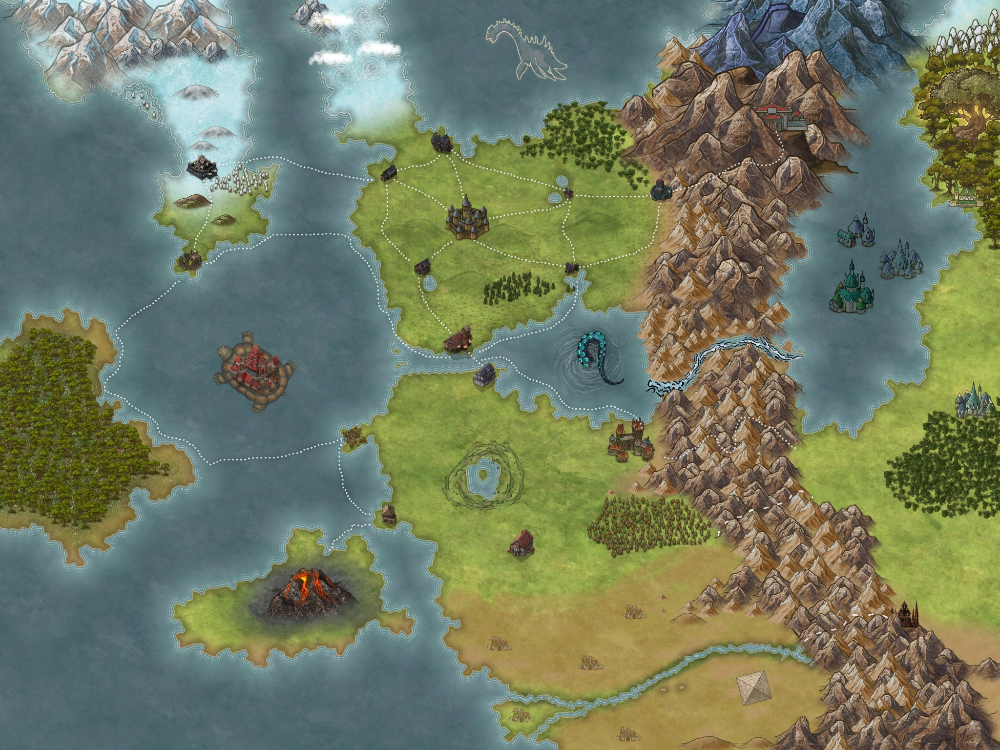

Fahre mit der Maus über eine farbige Fläche, um die Region zu sehen. Klicke auf eine Fläche oder den gelben Marker, um die Region in Obsidian zu öffnen.

| # | Region | Position | Status | Link zu Notiz |
|---|---|---|---|---|
| 1 | Die Flusskönigreiche | Nordkontinent (mitte) | ✅ Benannt | [[Die Flusskönigreiche]] |
| 2 | Die Frostgipfel | Nordwesten | ✅ Benannt | [[Die Frostgipfel]] |
| 3 | Die Urzeitinsel | Westen (weit links) | ✅ Benannt | [[Die Urzeitinsel]] |
| 4 | Die Schildkröte | Zentraler Ozean | ✅ Benannt | [[Die Schildkröte]] |
| 5 | Die Neun Hallen | Zentrales Gebirge (Eisenkamm) | ✅ Benannt | [[Neun Hallen]] |
| 6 | Norden des Südkontinents | Südkontinent (Norden) | ❌ Offen | Noch keine Notiz |
| 7 | Wüste im Süden | Südkontinent (Süden) | ❌ Offen | Noch keine Notiz |
| 8 | Waldreich Nordosten | Nordosten | ❌ Offen | Noch keine Notiz |
| 9 | Ebenen Südosten | Südosten | ❌ Offen | Noch keine Notiz |
| 10 | Großer See | Ostküste | ❌ Offen | Noch keine Notiz |
| 11 | Vulkaninsel | Südwesten | ❌ Offen | Noch keine Notiz |
| 12 | Zentrales Gebirge | Gebirgsmassiv (Mitte) | ❌ Offen | Noch keine Notiz |
Hier sind alle Städte, Festungen und Siedlungen aufgelistet, die ich auf der Weltkarte identifiziert habe. Bereits angelegte Orte sind verlinkt.
| Ort | Region | Status | Link |
|---|---|---|---|
| Taran | Die Flusskönigreiche | ✅ | [[Taran]] |
| Zweiseen | Die Flusskönigreiche | ✅ | [[Zweiseen]] |
| Westhafen | Die Flusskönigreiche | ✅ | [[Westhafen]] |
| Fährstein | Die Flusskönigreiche | ✅ | [[Fährstein]] |
| Buchtwehr | Die Flusskönigreiche | ✅ | [[Buchtwehr]] |
| Hochwacht | Die Flusskönigreiche | ✅ | [[Hochwacht]] |
| Eisenkammfeste | Die Flusskönigreiche | ✅ | [[Eisenkammfeste]] |
| Greifenau | Die Flusskönigreiche | ✅ | [[Greifenau]] |
| Fastning | Die Frostgipfel | ✅ | [[Fastning]] |
| Jongmur | Die Frostgipfel | ✅ | [[Jongmur]] |
| Stadt auf dem Panzer | Die Schildkröte | ❌ | Noch keine Notiz |
| Schwarze Zitadelle | Die Frostgipfel / Nordwesten | ❌ | Noch keine Notiz |
| Hafenstadt (Südspitze Schneeland) | Die Frostgipfel | ❌ | Noch keine Notiz |
| Wasserschloss / Unterwasserpalast | Großer See | ❌ | Noch keine Notiz |
| Weltenbaum-Stadt | Waldreich Nordosten | ❌ | Noch keine Notiz |
| Pyramidenstadt | Wüste im Süden | ❌ | Noch keine Notiz |
| Bergfestung (Ostflanke Gebirge) | Zentrales Gebirge | ❌ | Noch keine Notiz |
| Dunkle Feste (Wüstenrand) | Wüste im Süden | ❌ | Noch keine Notiz |